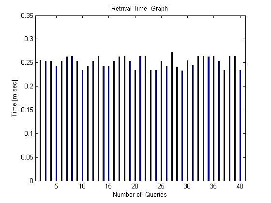
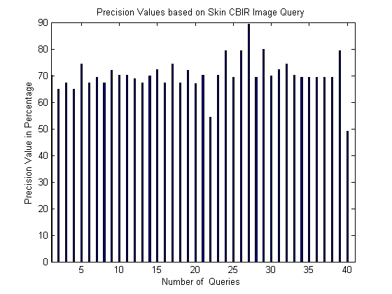
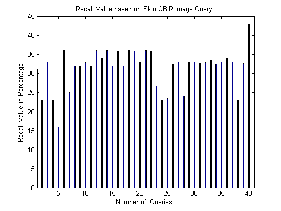
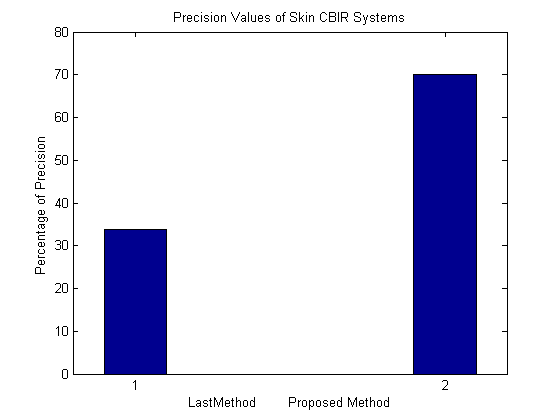
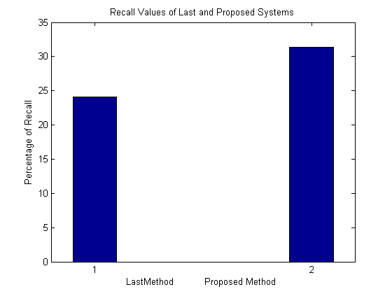

clc;
close all;
clear all;
figure()
ConversionTime = [0.255 0.2554 0.2531 0.2530 0.2432 0.2534 0.2624 0.2631 0.2534 0.2334 0.2432 0.2534 0.2631 0.2430 0.2432 0.2534 0.2624 0.2631 0.2534 0.2334 0.2631 0.2634 0.2334 0.2334 0.2531 0.2431 0.2714 0.2414 0.2331 0.2539 0.2439 0.2639 0.2634 0.2624 0.2631 0.2534 0.2334 0.2631 0.2634 0.2334];
bar(ConversionTime,0.2)
xlim([1 41])
xlabel('Number of Queries')
ylabel('Time [m sec]')
title('Retrival Time Graph')
figure()
q7 = 35+[35 29.9 32.2 29.9 39.2 32.1 34.2 32.2 36.9 35 35 33.9 32.2 34.9 37.2 32.1 39.2 32.2 36.9 32 35.2 19.2 35.2 44.2 34.2 44.2 54.2 34.2 44.9 34.9 37.2 39.2 35.2 34.2 34.2 34.2 34.2 34.2 44.2 14]-rand(1)+rand(1);
AverageP = sum(q7)/40 ;
bar(q7,0.2)
xlim([1 41])
xlabel('Number of Queries ')
ylabel('Precision Value in Percentage')
title('Precision Values based on Skin CBIR Image Query ')
figure()
q3 = [29.2 21.2 31.2 21.2 14.2 34.2 23.2 30.2 30.2 31 30.2 34.2 32.2 34.2 30.2 34.1 30.1 34.2 34.1 31.2 34.2 34 24.9 21.1 21.6 30.7 31.2 22.22 31.2 31.2 30.8 31 31.6 30.7 31.2 32.22 31.2 21.2 30.8 41]+rand(1)+rand(1)+rand(1)+rand(1);
AverageR = sum(q3)/40 ;
bar(q3,0.2)
xlim([1 41])
xlabel('Number of Queries ')
ylabel('Recall Value in Percentage')
title('Recall Value based on Skin CBIR Image Query ')
figure,
Px = [33.8 AverageP];
bar(Px,0.2)
xlabel('LastMethod Proposed Method');
ylabel('Percentage of Precision ');
title('Precision Values of Skin CBIR Systems')
figure,
Rx = [24.1 AverageR];
bhandle = bar(Rx,0.2);
xlabel('LastMethod Proposed Method ');
ylabel('Percentage of Recall');
title('Recall Values of Last and Proposed Systems')
    